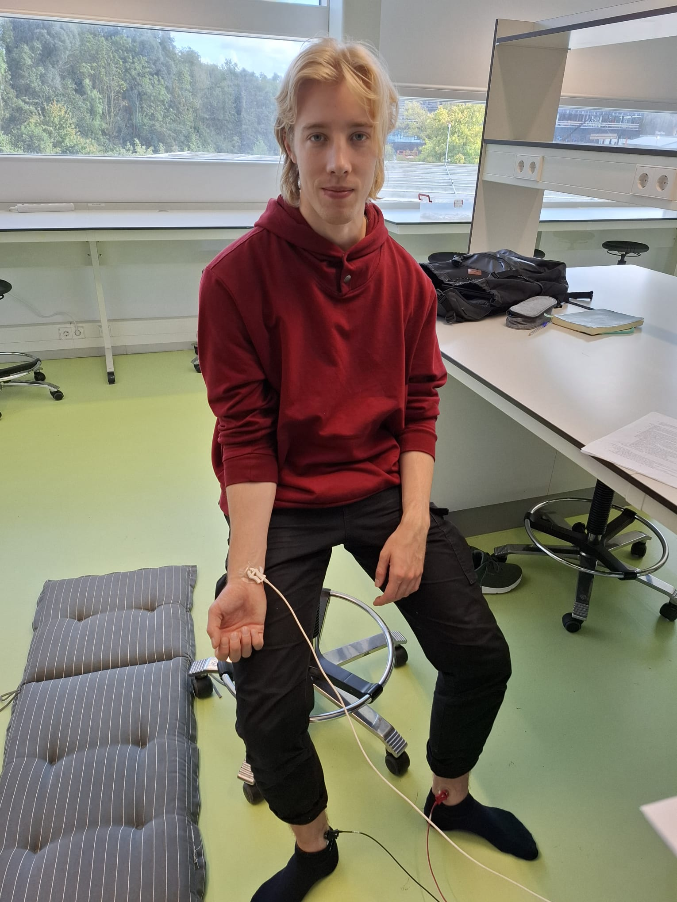
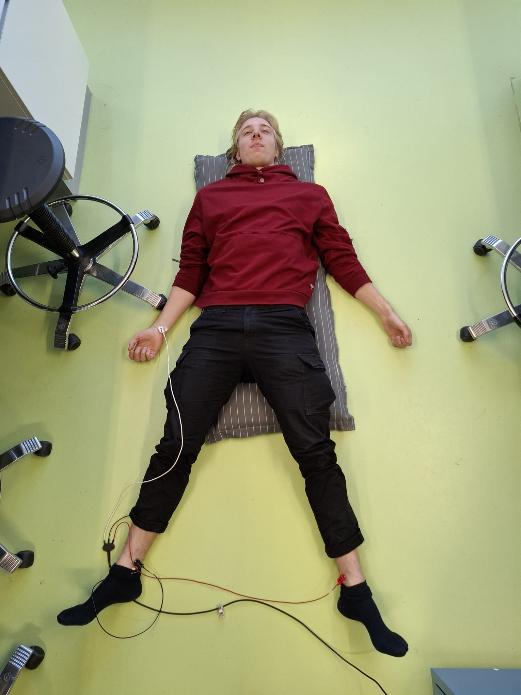
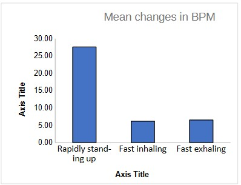

Experiment
Baroreceptor reflex experiment
Participants were asked to not talk, smile or look at the screen to avoid influence on the measurements.
- Sit quietly for 1 minute (baseline)
- Take a rapid, deep breath and hold it for 15 seconds
- Exhale slowly
- Perform a deep exhale and hold the breath for as long as possible.
- upright for 1 minute.
- down for 1.5 minutes.
- Stand up rapidly and remain standing for 1 minute.
The average heart rate was measured for sitting, standing, lying down, and rapidly standing. Additionally, heart rate was recorded just before and after rapid inhalation and exhalation.


Results:
The mean Beats per minutes (BPM) rose on average by 27.57 for standing up rapidly,
6.19 for fast inhaling and 6.51 for fast exhaling.

These results indicate that rapidly standing up increases BPM considerably.
While fast inhaling also raises BPM, it does so more moderately, and there doesn't seem to be much difference between inhaling and exhaling.
The rise in BPM is likely due to the baroreceptor reflex.
This reflex responds to a sudden drop in blood pressure upon standing by activating the sympathetic nervous system, which increases heart rate via stimulation of the sinoatrial (SA) node. Once blood pressure stabilizes, parasympathetic activity is restored to bring the heart rate back to baseline
(Armstrong & Moore, 2025)
These results showcase how physiological responses to environmental changes are regulated through autonomic pathways.